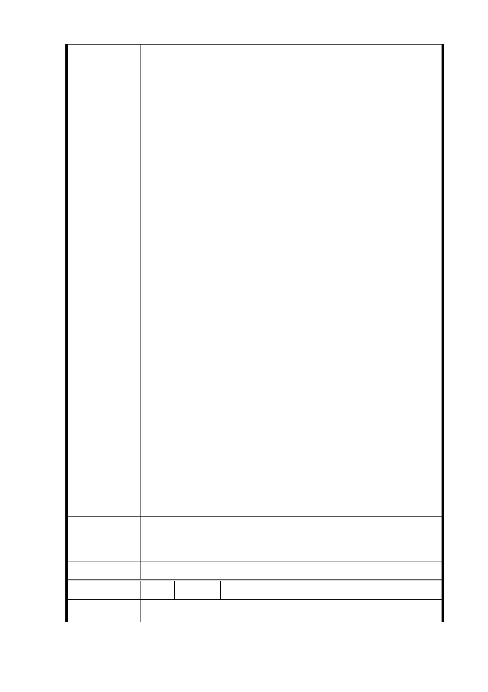

米，南港公園為其15倍大 156,612 平方米。戶籍人口信義
區為南港區2 倍。)
土地行政權是政府的，我們本無權奢望。但是想想所有
權是人民的。
但是想想瑠公農田水利會在民國67年時大義將私有水
圳捐贈臺北市政府以建學校、創百年大計。所以仍請願郝市
長及國民黨民進黨等各政黨諸君民代以愛護市民的心替我
們爭取一個區民可以在災難來時可躲避的大空間，但我們也
相信要求前述各位能跟大家一起同理心非常的難 所以我們
要團結會死命為我們自己爭取到。各位台灣朋友台北市民與
信義區區民可以師法前人創百年大計於今。以眾小我的力量
集合成大我與不公不義的政府進行對抗。
日本311 大地震與核災，殷鑑不遠。請完整保留6.5 公
頃土地，讓我們在防災於未然時、可以給我們信義區後代子
孫有一塊避難之所。
守護現成森林公園，為廣慈半百老樹請命！廣慈博愛園
區應作為防災公園。
我們的訴求:
1.市政建設需落實公民參與
2.依樹保會議決議存留老樹勿違法遷移
3.舊有福德平宅做為文創藝術觀光村
4.反對福德廣慈任何程度的開發
將這塊土地保留出來讓台北市有第二座讓世界驚豔的
綠色圖書館，連結附近的四獸山的郊山美景，擴大台北市市
民活動空間。
市府回覆
意見
廣慈綠活社區聯盟
https://www.facebook.com/Guangcigreenhopegroup 臉書
http://greenhope.pixnet.net/blog 部落格
https://www.facebook.com/groups/306566682841571/ 志工團
臉書 部落格志工團
一、 公共開放空間部分如編號 1。
二、 受保護樹木、樹群部分如編號 5。
三、 福德平宅部分如編號 10-1。
委 員 會 決 議 同編號 1
編 號 14 陳情人 林○賜
陳 情 理 由 一、 大道路路寬僅11公尺，車輛進出有困難。
- 27 -